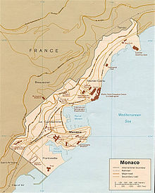

ГЕОГРАФИЧЕСКОЕ ПОЛОЖЕНИЕ
Монако расположено на юге Европы на побережье Лигурийского моря близ французского Лазурного Берега в 20 км к северо-востоку от Ниццы. На суше княжество граничит с Францией, департамент Приморские Альпы.
Площадь страны составляет 2,02 км² (что почти втрое меньше парка Сокольники в Москве). Длина береговой линии — 4,1 км, протяжённость сухопутных границ — 4,4 км. За последние 20 лет территория страны увеличилась почти на 40 га за счёт осушения морских территорий.